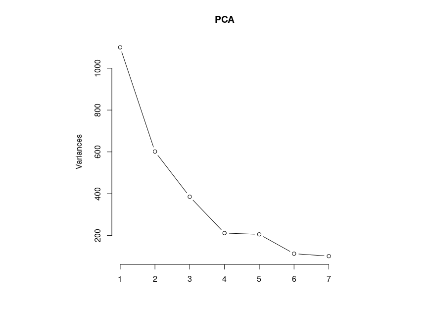

Principal Component Analysis (PCA) is a statistical technique to analyze high-dimensional data that uses linear combinations of the original variables to capture the maximum variance of the data. The main uses of PCA are dimension reduction and patterns identification. This post describes the PCA workflow and the step-to-step process applied to an analytical chemistry example using R.
1. Workflow
Briefly, one can start by defining the aim of the analysis. Then, examining the raw data and pre-processing it for outliers, centering, scaling, and feature selection. Centering and scaling can also be done directly with the PCA function in R.
Once the data is pre-processed, apply the PCA analysis in R, which calculates:
- Covariance/Correlation matrix: relationships between variables
- Eigenvectors and Eigenvalues: directions and their relative importance
- New variables: data transformation
After examining the PCA results:
- Select the number of principal components to keep
- Plot the results
2. Example: Chemical composition of essential oils from different plants by GM-MS analysis
R script and data: pca-essential-oils
The chemical composition data is provided by Benomari FZ et al. 1. Actually, there are two tables, (1) oils grouped in 8 chemical classes and (2) a supplementary table with all the essential oils concentrations. We will use the last mentioned.
The aim of this data analysis is to obtain insights about the oils concentrations and their possible patterns or grouping tendencies.
The essential oils profiles might also be related to factors such as species, age, weather seasons, and geographic location, for which the data could be further examined.
The pre-processing includes imputation of empty cells and trace labels. On this example, empty cells and trace labels will be considered as zero values. Additionally, one variable did not have values for any of the plants therefore it was removed.
In total, there are 14 samples and 121 variables. Ideally, it is preferred to work with a number of samples that greatly exceeds the number of variables by many times. A feature selection step could be considered, for example a filter of variance threshold would remove low variance features that contribute little information. However, for the purpose of this example, we will proceed with the entire dataset.
For the analysis in R we can start by setting the working directory and loading the dataset,
setwd("the/working/directory")
dataset <- read.csv("dataset.csv",
header = TRUE,
sep = ";",
stringsAsFactors = FALSE)
Examine the data with
head(dataset)
Set the PCA model. In this case we will center and do not apply scaling as the chemical composition is in percentage.
PCA <- prcomp(dataset[,3:123],center = T,scale. = F)
Notice that the sum of eigenvalues is equivalent to the sum of the diagonal of the covariance matrix, both express the total variance.
covariance <- cov(dataset[,3:123])
sum(diag(covariance))
eigenvalues <- PCA$sdev^2
sum(eigenvalues)
Get the summary of PCs and note the importance of each PC,
summary(PCA)
Importance of components:
PC1 PC2 PC3 PC4 PC5 PC6 PC7 PC8 PC9 PC10 PC11 PC12 PC13 PC14
Standard deviation 33.1651 24.5291 19.6369 14.55046 14.34261 10.64161 10.07339 6.80940 6.01272 2.47266 2.03735 1.33698 0.97587 4.954e-15
Proportion of Variance 0.3907 0.2137 0.1370 0.07521 0.07308 0.04023 0.03605 0.01647 0.01284 0.00217 0.00147 0.00064 0.00034 0.000e+00
Cumulative Proportion 0.3907 0.6045 0.7415 0.81671 0.88978 0.93002 0.96606 0.98254 0.99538 0.99755 0.99903 0.99966 1.00000 1.000e+00
Examine the contribution of each PC with a plot
screeplot(PCA,npcs = 7,type = "lines")

The number of PCs to keep will be 3, reaching a cumulative proportion of 0.7415. We do not choose more than 3 in order to plot it in a 3 dimensions graph. Also, it might be possible to plot various combinations of significant PCs to examine patterns. Normally, PCs with a proportion of variance greater that 1% are considered significant.
We will plot the 3 first PCs as follows,
dataset$Genus <- as.factor(dataset$Genus)
PCAscores <- as.data.frame(PCA$x[, 1:3])
Genus_colors <- rainbow(nlevels(dataset$Genus))[as.integer(dataset$Genus)]
library(rgl)
plot3d(PCAscores[, 1:3],
col = Genus_colors,
size = 3,
xlab = "PC1",
ylab = "PC2",
zlab = "PC3",
main = "3D PCA Scores")
rglwidget()

To plot 2 PCs we can use instead
plot(PCAscores[,-3], main="Scores", col = Genus_colors, pch = 15)
legend("topright",
legend = levels(dataset$Genus),
col = rainbow(nlevels(dataset$Genus)),
pch = 15,
title = "Genus")
Despite the low number of samples, the 3D and 2D PCA plot show certain trends, some of them noted by Benomari FZ et al.1:
- Two Thymus species (in purple) were clearly differentiated in the lowest PC1 and highest PC2. This pair will also be difficult to disgregate by PCA.
- Also the graphs showed that the two Lavandula species differed greatly, and that Lavandula Aspic is closest to the Eucalyptus Radiata and Eucalyptus Globulus species. Benomari FZ et al.1 noted that Lavandula Aspic and Eucalyptus Globulus share high concentrations of 1,8-cineol and similar medical use.
- At the same time, some species of Mentha, Thymus, Rosmarinus, Lavandula grouped together sharing common traits, but all Eucalyptus species are most likely to be distinguished from the other aromatic plants.
PCA would also be helpful in identifying similar therapeutic applications of essential oils. To further study the grouping tendencies in PCA of these aromatic and medicinal plants, it could be useful to process all individual sample analysis data rather than averaged concentrations.
References
-
Benomari, F.Z.; Sarazin, M.; Chaib, D.; Pichette, A.; Boumghar, H.; Boumghar, Y.; Djabou, N. Chemical Variability and Chemotype Concept of Essential Oils from Algerian Wild Plants. Molecules 2023, 28, 4439. doi: 10.3390/molecules28114439 ↩︎ ↩︎ ↩︎